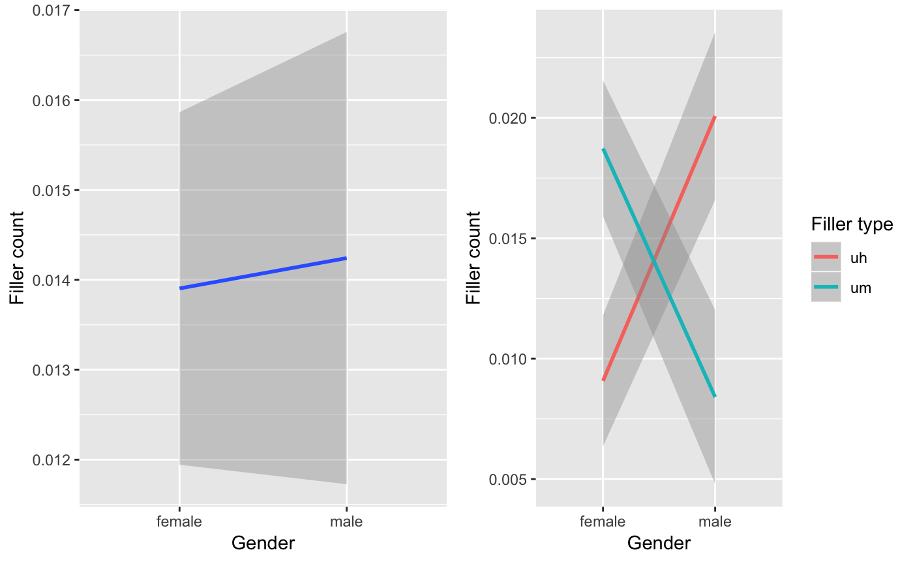
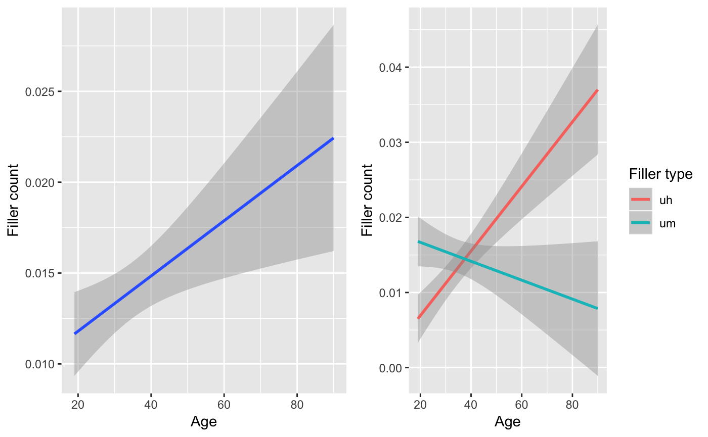
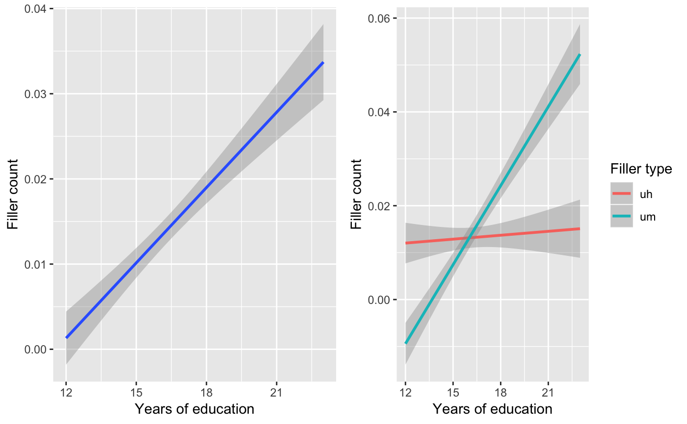
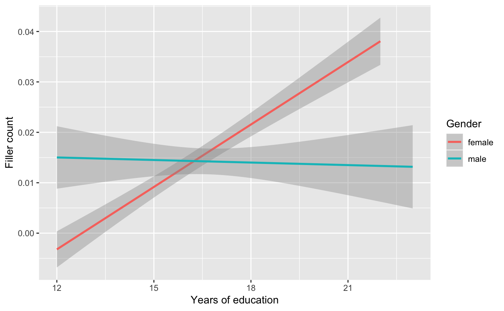
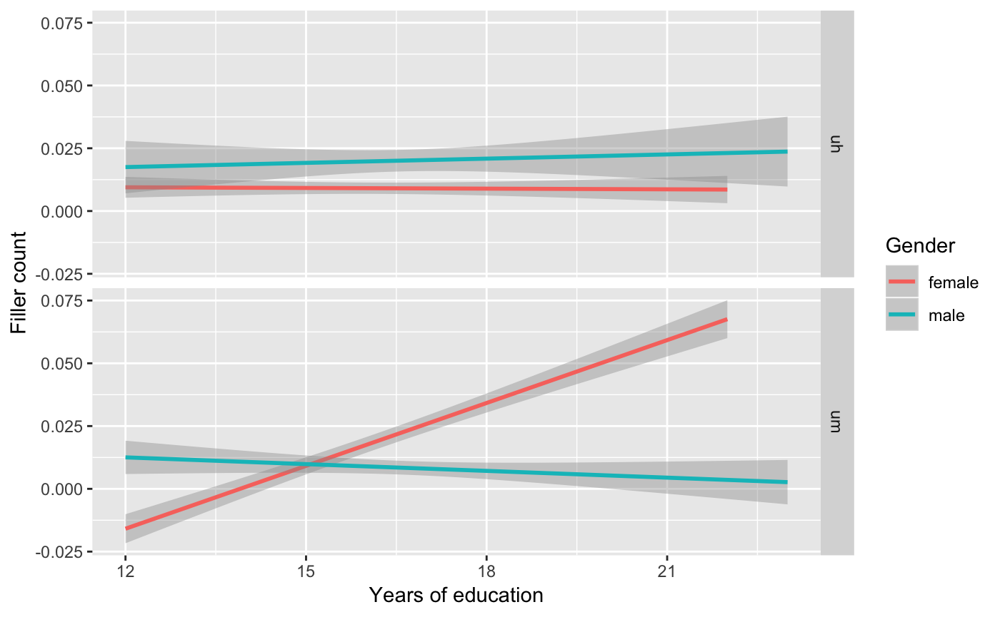

vignettes/analysis-an-inference-example.Rmd
analysis-an-inference-example.RmdIn Tottie (2011) the spoken components of the British National Corpus were used to investigate the potential sociolinguistics of the usage of the fillers ‘uh’ and ‘um’. It was found that men use more fillers than women and speakers in managerial or higher positions also use more fillers. The results for age are less telling with one clear result being that the oldest cohort used more fillers. Turning to each of the fillers, men used more ‘uh’ than ‘um’ and women the opposite. It was also found that when looking at these variants age appeared to predict usage; younger speakers used more ‘um’ and older speakers more ‘uh’. Finally, one somewhat counterintuitive result is that speakers of higher socio-economic status used ‘um’ more than there lower status counterparts.
The authors focus on British English exclusively and compare both conversational and ‘context-governed’ spoken language. In this case study, we will look at an American English corpus: Santa Barbara Corpus of Spoken American English. This corpus is conversational and fortunately includes a rich set of meta data including ages, occupations, genders, years of education, etc.
Using this corpus we will explore the main components of the Tottie (2011) article. That is, to explore the influence of gender, age, and socioeconomic status on the usage of fillers, in general, and then the types of fillers, either ‘uh’ or ‘um’.
Let’s access a curated version of this data through the analyzr package. First, install and load the package, and the main tidyverse tools.
library(tidyverse)
#> ── Attaching packages ───────────────────────────────────────────────────────────────────── tidyverse 1.2.1 ──
#> ✔ ggplot2 3.1.0 ✔ purrr 0.3.0
#> ✔ tibble 2.0.1 ✔ dplyr 0.7.8
#> ✔ tidyr 0.8.2 ✔ stringr 1.3.1
#> ✔ readr 1.3.1 ✔ forcats 0.3.0
#> Warning: package 'tibble' was built under R version 3.5.2
#> Warning: package 'purrr' was built under R version 3.5.2
#> ── Conflicts ──────────────────────────────────────────────────────────────────────── tidyverse_conflicts() ──
#> ✖ dplyr::filter() masks stats::filter()
#> ✖ dplyr::lag() masks stats::lag()
library(analyzr)Let’s take a look at the sbc dataset.
glimpse(sbc)
#> Observations: 15,475
#> Variables: 13
#> $ id <dbl> 1, 1, 1, 1, 1, 1, 1, 1, 1, 1, 1, 1, 1, 1, 1, 1, …
#> $ name <chr> "lenore", "lenore", "lenore", "lenore", "lenore"…
#> $ gender <chr> "female", "female", "female", "female", "female"…
#> $ age <dbl> 30, 30, 30, 30, 30, 30, 30, 30, 30, 30, 30, 30, …
#> $ dialect <chr> "Los Angeles", "Los Angeles", "Los Angeles", "Lo…
#> $ dialect_state <chr> "CA", "CA", "CA", "CA", "CA", "CA", "CA", "CA", …
#> $ current_state <chr> "CA", "CA", "CA", "CA", "CA", "CA", "CA", "CA", …
#> $ highest_edu <chr> "BA", "BA", "BA", "BA", "BA", "BA", "BA", "BA", …
#> $ years_edu <dbl> 16, 16, 16, 16, 16, 16, 16, 16, 16, 16, 16, 16, …
#> $ occupation <chr> "student", "student", "student", "student", "stu…
#> $ ethnicity <chr> "white", "white", "white", "white", "white", "wh…
#> $ utterance <chr> "... So you don't need to go ... borrow equipmen…
#> $ utterance_clean <chr> "so you don't need to go borrow equipment from a…To find out more about the data we can look at the data dictionary provided in the analyzr package with ?sbc.
First we will prepare the data by isolating the independent variables of intereest and extracting our dependent variables ‘uh’ and ‘um’, add them to the sbc data.frame and transform the data.frame to a format more suitable to the visualizations and significance tests that we will be conducting. Second, we will step through ‘gender’, ‘age’, and ‘socioeconomic class’ and visualize and submit the contrasts to the relevant statistical tests.
Before we continue, let’s decide on the column variables we are going to use as proxies for ‘gender’, ‘age’ and ‘socioeconomic class’. The first two are easy and straight forward. Socioeconomic class is much more tricky, not just for us, but in general. From my knowledge of the sociolinguistic literature and to keep operationalization of this variable simple, I will use years_edu as our ‘socioeconomic class’ proxy.
As promised, we will now get rid of the data that does not have complete data for these three variables. First we select only those variables/ columns in sbc of interest with select(). Then we use complete.cases() to find rows that have data for all of these variables afterwhich we slice the sbc data.frame to include only these complete cases.
Now we need to count the occurrences of ‘uh/um’ for each utterance. We will add a column with the counts for each filler type using str_count() and then we will change this ‘wide’ format to ‘long’ format with gather(). That is, we want the fillers to be under one column and the number of each filler to be in a separate column.
sbc <-
sbc %>%
mutate(um = str_count(utterance_clean, "\\b(um|u=m)\\b")) %>%
mutate(uh = str_count(utterance_clean, "\\b(uh|u=h)\\b"))
sbc
#> # A tibble: 11,331 x 8
#> id name gender age years_edu utterance_clean um uh
#> <dbl> <chr> <chr> <dbl> <dbl> <chr> <int> <int>
#> 1 1 lenore female 30 16 so you don't need to go… 0 0
#> 2 1 lenore female 30 16 to 0 0
#> 3 1 lenore female 30 16 to do the feet 0 0
#> 4 1 lenore female 30 16 do the hooves 0 0
#> 5 1 lenore female 30 16 did they train you 0 0
#> 6 1 lenore female 30 16 did they train you that 0 0
#> 7 1 lenore female 30 16 so you have your own eq… 0 0
#> 8 1 lenore female 30 16 but 0 0
#> 9 1 lenore female 30 16 yeah 0 0
#> 10 1 lenore female 30 16 i bet 0 0
#> # … with 11,321 more rows
sbc <-
sbc %>%
gather(filler_type, filler_count, um:uh)
sbc
#> # A tibble: 22,662 x 8
#> id name gender age years_edu utterance_clean filler_type
#> <dbl> <chr> <chr> <dbl> <dbl> <chr> <chr>
#> 1 1 leno… female 30 16 so you don't n… um
#> 2 1 leno… female 30 16 to um
#> 3 1 leno… female 30 16 to do the feet um
#> 4 1 leno… female 30 16 do the hooves um
#> 5 1 leno… female 30 16 did they train… um
#> 6 1 leno… female 30 16 did they train… um
#> 7 1 leno… female 30 16 so you have yo… um
#> 8 1 leno… female 30 16 but um
#> 9 1 leno… female 30 16 yeah um
#> 10 1 leno… female 30 16 i bet um
#> # … with 22,652 more rows, and 1 more variable: filler_count <int>The first question to explore here is whether filler or type of filler is predicted by gender differences. In Tottie, it was found that A) men use more fillers than women, but B) women use ‘um’ more than men.
To get a sense what our data is doing, let’s visualize these contrasts.
p1 <-
sbc %>%
ggplot(aes(x = gender, y = filler_count, group = 1)) +
geom_smooth(method = "lm") +
labs(x = "Gender", y = "Filler count")
p2 <-
sbc %>%
ggplot(aes(x = gender, y = filler_count, group = filler_type, color = filler_type)) +
geom_smooth(method = "lm") +
labs(x = "Gender", y = "Filler count", color = "Filler type")
gridExtra::grid.arrange(p1, p2, ncol = 2)
Visually, it appears that there is a slight tendency towards more fillers for men, on the one hand and then contrast between the types of fillers most used by each gender: men prefer ‘uh’ and women ‘um’. To confirm these trends we submit them to significance testing. To select the right test we need to be clear about the informational value of our variables and the number of independent variables. Our dependent variable is filler_count, a frequency and our independent variable, gender is categorical. Following Gries’ flowchart below, we see that we would be able to use the chisq.test() –which is what Tottie (2011) did. However, we will be wanting to scale our analysis to multiple variables and Chi-squared doesn’t scale well. Another option is to explore correlation. Looking on this side of the flowchart we see that we would select ‘Possion regression’ using the glm() function.
Figure: Gries’ Flowchart
We can first test the effects of gender on filler_count.
# A
summary(glm(filler_count ~ gender, data = sbc, family = "poisson"))
#>
#> Call:
#> glm(formula = filler_count ~ gender, family = "poisson", data = sbc)
#>
#> Deviance Residuals:
#> Min 1Q Median 3Q Max
#> -0.1688 -0.1688 -0.1668 -0.1668 3.9878
#>
#> Coefficients:
#> Estimate Std. Error z value Pr(>|z|)
#> (Intercept) -4.27553 0.07142 -59.861 <2e-16 ***
#> gendermale 0.02400 0.11531 0.208 0.835
#> ---
#> Signif. codes: 0 '***' 0.001 '**' 0.01 '*' 0.05 '.' 0.1 ' ' 1
#>
#> (Dispersion parameter for poisson family taken to be 1)
#>
#> Null deviance: 2721.7 on 22661 degrees of freedom
#> Residual deviance: 2721.7 on 22660 degrees of freedom
#> AIC: 3357.5
#>
#> Number of Fisher Scoring iterations: 6So although we saw a trend (the line was slightly angled) the effect is not significant (gendermale: the contrast to genderfemale is not less than \(0.05\)).
Next we will add filler_type to the mix to give us the potential interaction effects between gender and filler_type.
#B
summary(glm(filler_count ~ gender * filler_type, data = sbc, family = "poisson"))
#>
#> Call:
#> glm(formula = filler_count ~ gender * filler_type, family = "poisson",
#> data = sbc)
#>
#> Deviance Residuals:
#> Min 1Q Median 3Q Max
#> -0.2004 -0.1935 -0.1348 -0.1348 4.1949
#>
#> Coefficients:
#> Estimate Std. Error z value Pr(>|z|)
#> (Intercept) -4.7016 0.1250 -37.613 < 2e-16 ***
#> gendermale 0.7936 0.1651 4.807 1.53e-06 ***
#> filler_typeum 0.7239 0.1523 4.753 2.01e-06 ***
#> gendermale:filler_typeum -1.5947 0.2502 -6.374 1.85e-10 ***
#> ---
#> Signif. codes: 0 '***' 0.001 '**' 0.01 '*' 0.05 '.' 0.1 ' ' 1
#>
#> (Dispersion parameter for poisson family taken to be 1)
#>
#> Null deviance: 2721.7 on 22661 degrees of freedom
#> Residual deviance: 2676.5 on 22658 degrees of freedom
#> AIC: 3316.3
#>
#> Number of Fisher Scoring iterations: 7Here we see a number of significant effects. However, when testing for interactions, the highest-order interaction that is significant is where you focus. Any other effects cannot be reliably interpreted. That is because an interaction says that the trend for one dimension, say gender is not the same for the levels of another factor, say filler_type. This is exactly what we have here, and we visually saw this earlier –the lines crossed.
Upshot: Filler frequency is not related to gender. But there is an interaction between filler type and gender – men use ‘uh’ more than ‘um’ and women the reverse.
Turning to age we are already set up with the data side so all we need to do is visualize our contrasts: A) is filler_count predicted by age and B) is filler_count predicted by the interaction between age and filler_type. Remember that Tottie (2011) found A) that older speakers use more fillers and B) the filler ‘um’ was more common with younger speakers and ‘uh’ with older speakers.
# A
p1 <-
sbc %>%
ggplot(aes(x = age, y = filler_count, group = 1)) +
geom_smooth(method = "glm") +
labs(x = "Age", y = "Filler count")
# B
p2 <-
sbc %>%
ggplot(aes(x = age, y = filler_count, color = filler_type, group = filler_type)) +
geom_smooth(method = "glm") +
labs(x = "Age", y = "Filler count", color = "Filler type")
gridExtra::grid.arrange(p1, p2, ncol = 2)
There appears to be an effect for age and an interaction between age and filler_type: Older speakers use ‘uh’ more than younger speakers, and the reverse is true for ‘um’, just not with the same strength. Let’s confirm by significance testing with glm().
# A
summary(glm(filler_count ~ age, data = sbc, family = "poisson"))
#>
#> Call:
#> glm(formula = filler_count ~ age, family = "poisson", data = sbc)
#>
#> Deviance Residuals:
#> Min 1Q Median 3Q Max
#> -0.2158 -0.1693 -0.1639 -0.1601 4.0328
#>
#> Coefficients:
#> Estimate Std. Error z value Pr(>|z|)
#> (Intercept) -4.599404 0.137766 -33.386 < 2e-16 ***
#> age 0.009323 0.003414 2.731 0.00632 **
#> ---
#> Signif. codes: 0 '***' 0.001 '**' 0.01 '*' 0.05 '.' 0.1 ' ' 1
#>
#> (Dispersion parameter for poisson family taken to be 1)
#>
#> Null deviance: 2721.7 on 22661 degrees of freedom
#> Residual deviance: 2715.0 on 22660 degrees of freedom
#> AIC: 3350.8
#>
#> Number of Fisher Scoring iterations: 6Here there is a main effect for age.
# B
summary(glm(filler_count ~ age * filler_type, data = sbc, family = "poisson"))
#>
#> Call:
#> glm(formula = filler_count ~ age * filler_type, family = "poisson",
#> data = sbc)
#>
#> Deviance Residuals:
#> Min 1Q Median 3Q Max
#> -0.2924 -0.1768 -0.1662 -0.1495 4.1492
#>
#> Coefficients:
#> Estimate Std. Error z value Pr(>|z|)
#> (Intercept) -5.164806 0.186075 -27.757 < 2e-16 ***
#> age 0.022363 0.004057 5.512 3.55e-08 ***
#> filler_typeum 1.284237 0.288832 4.446 8.74e-06 ***
#> age:filler_typeum -0.032152 0.007474 -4.302 1.69e-05 ***
#> ---
#> Signif. codes: 0 '***' 0.001 '**' 0.01 '*' 0.05 '.' 0.1 ' ' 1
#>
#> (Dispersion parameter for poisson family taken to be 1)
#>
#> Null deviance: 2721.7 on 22661 degrees of freedom
#> Residual deviance: 2693.6 on 22658 degrees of freedom
#> AIC: 3333.4
#>
#> Number of Fisher Scoring iterations: 6And this test reveals that there is an interaction between age and filler_type.
Upshot: Filler frequency is related to age, with older speakers using more. Furthermore, there is an interaction between filler type: older speakers prefer ‘uh’ to ‘um’ and younger speakers ‘um’ to ‘uh’.
Our final excursion is to look at years_edu as a proxy for ‘socioeconomic class’. Tottie (2011) found A) that higher socio-economic status predicted more filler usage but B) the filler ‘um’ was more common with this group, whereas the lower socio-economic speakers used more ‘uh’. She used a combination of other characteristics to approximate this variable so our findings are not directly comparable –but let’s see what we find.
# A
p1 <-
sbc %>%
ggplot(aes(x = years_edu, y = filler_count, group = 1)) +
geom_smooth(method = "glm") +
labs(x = "Years of education", y = "Filler count")
# B
p2 <-
sbc %>%
ggplot(aes(x = years_edu, y = filler_count, color = filler_type, group = filler_type)) +
geom_smooth(method = "glm") +
labs(x = "Years of education", y = "Filler count", color = "Filler type")
gridExtra::grid.arrange(p1, p2, ncol = 2)
So it appears that the more years of education you have the more apt you are to use fillers. Furthermore, it seems that the most indicative filler that increases with years of education is ‘um’: ‘uh’ stays quite steady regardless of years_edu. But, no verdict until we run the tests.
# A
summary(glm(filler_count ~ years_edu, data = sbc, family = "poisson"))
#>
#> Call:
#> glm(formula = filler_count ~ years_edu, family = "poisson", data = sbc)
#>
#> Deviance Residuals:
#> Min 1Q Median 3Q Max
#> -0.2961 -0.1852 -0.1535 -0.1535 4.4219
#>
#> Coefficients:
#> Estimate Std. Error z value Pr(>|z|)
#> (Intercept) -7.44534 0.36186 -20.57 <2e-16 ***
#> years_edu 0.18775 0.02032 9.24 <2e-16 ***
#> ---
#> Signif. codes: 0 '***' 0.001 '**' 0.01 '*' 0.05 '.' 0.1 ' ' 1
#>
#> (Dispersion parameter for poisson family taken to be 1)
#>
#> Null deviance: 2721.7 on 22661 degrees of freedom
#> Residual deviance: 2642.6 on 22660 degrees of freedom
#> AIC: 3278.5
#>
#> Number of Fisher Scoring iterations: 7Yep, our trend for an effect of years_edu is confirmed.
#B
summary(glm(filler_count ~ years_edu * filler_type, data = sbc, family = "poisson"))
#>
#> Call:
#> glm(formula = filler_count ~ years_edu * filler_type, family = "poisson",
#> data = sbc)
#>
#> Deviance Residuals:
#> Min 1Q Median 3Q Max
#> -0.4152 -0.1655 -0.1621 -0.1381 4.0572
#>
#> Coefficients:
#> Estimate Std. Error z value Pr(>|z|)
#> (Intercept) -4.66619 0.54520 -8.559 < 2e-16 ***
#> years_edu 0.02085 0.03278 0.636 0.525
#> filler_typeum -5.01604 0.74024 -6.776 1.23e-11 ***
#> years_edu:filler_typeum 0.29354 0.04219 6.957 3.47e-12 ***
#> ---
#> Signif. codes: 0 '***' 0.001 '**' 0.01 '*' 0.05 '.' 0.1 ' ' 1
#>
#> (Dispersion parameter for poisson family taken to be 1)
#>
#> Null deviance: 2721.7 on 22661 degrees of freedom
#> Residual deviance: 2591.7 on 22658 degrees of freedom
#> AIC: 3231.6
#>
#> Number of Fisher Scoring iterations: 7And there is an interaction – ‘um’ increases with years of education.
Upshot: In the fillers analysis it appears that the more education a speaker has the more fillers are used. However, when looking at the interaction between filler type and education it is clear that the effect is driven by the increasing usage of ‘um’ in speakers with more education –usage of ‘uh’ stays constant.
These comparisons were aimed at replicating the approach in Tottie (2011) with American English. We have found some similarities and differences:
Gender
We found no difference between the overall usage of fillers between men and women –but we did find that there is a difference in the type of filler used: men tend towards ‘uh’ and women ‘um’.
Age
We found both effects reported: older speakers use more, and ‘uh’ is the preferred filler. ‘um’ is prefered by younger speakers but decreases with age, however, less dramatically.
Socioeconomic class
The data revealed the same finding as in Tottie (2011) –yet we used years_edu. More educated speakers tend to use more fillers and the filler of choice is ‘um’. ‘uh’ did not seem to change with years of education.
But you should be a bit interested in some of these findings. For example, are there differences between younger females versus younger males? Do educated males use more or less fillers than educated females? How about the types of fillers?
To explore these types of questions we need to add more independent variables to our analysis. Using regression we can add various independent variables without changes to our approach –the only difference being that the higher-level the interaction become the more difficult it becomes to interpret the findings. Let’s go ahead and throw gender, age and years_edu into the model predicting overall filler usage.
summary(glm(filler_count ~ gender * age * years_edu, data = sbc, family = "poisson"))
#>
#> Call:
#> glm(formula = filler_count ~ gender * age * years_edu, family = "poisson",
#> data = sbc)
#>
#> Deviance Residuals:
#> Min 1Q Median 3Q Max
#> -0.5230 -0.1606 -0.1485 -0.1359 4.0932
#>
#> Coefficients:
#> Estimate Std. Error z value Pr(>|z|)
#> (Intercept) -10.377590 1.933054 -5.368 7.94e-08 ***
#> gendermale 9.414340 2.991603 3.147 0.001650 **
#> age 0.059658 0.063855 0.934 0.350163
#> years_edu 0.371089 0.110965 3.344 0.000825 ***
#> gendermale:age -0.071277 0.078328 -0.910 0.362835
#> gendermale:years_edu -0.726721 0.196085 -3.706 0.000210 ***
#> age:years_edu -0.003853 0.003635 -1.060 0.289213
#> gendermale:age:years_edu 0.008680 0.004906 1.769 0.076829 .
#> ---
#> Signif. codes: 0 '***' 0.001 '**' 0.01 '*' 0.05 '.' 0.1 ' ' 1
#>
#> (Dispersion parameter for poisson family taken to be 1)
#>
#> Null deviance: 2721.7 on 22661 degrees of freedom
#> Residual deviance: 2570.6 on 22654 degrees of freedom
#> AIC: 3218.5
#>
#> Number of Fisher Scoring iterations: 7Here we see the highest-level interaction is between gender and years_edu. Let’s plot these two independent variables to see them.
p1 <-
sbc %>%
ggplot(aes(x = years_edu, y = filler_count, group = gender, color = gender)) +
geom_smooth(method = "glm") +
labs(x = "Years of education", y = "Filler count", color = "Gender")
p1
What we see here is the apparent trend towards women using more fillers as a education level. If we want to explore this effect a bit more, we could try to see if there is a filler in particular that is driving this effect by viewing the results by each filler type ‘uh’ and ‘um’.

And there it is, women use ‘um’ as a function of education. Let’s confirm.
summary(glm(filler_count ~ gender * years_edu * filler_type, data = sbc, family = "poisson"))
#>
#> Call:
#> glm(formula = filler_count ~ gender * years_edu * filler_type,
#> family = "poisson", data = sbc)
#>
#> Deviance Residuals:
#> Min 1Q Median 3Q Max
#> -0.4343 -0.1640 -0.1355 -0.1323 4.1944
#>
#> Coefficients:
#> Estimate Std. Error z value Pr(>|z|)
#> (Intercept) -4.542145 0.771532 -5.887 3.93e-09
#> gendermale 0.172824 1.159984 0.149 0.882
#> years_edu -0.009897 0.047352 -0.209 0.834
#> filler_typeum -6.028096 0.968073 -6.227 4.76e-10
#> gendermale:years_edu 0.037583 0.069887 0.538 0.591
#> gendermale:filler_typeum 7.376951 1.838019 4.014 5.98e-05
#> years_edu:filler_typeum 0.383037 0.056038 6.835 8.18e-12
#> gendermale:years_edu:filler_typeum -0.518142 0.110305 -4.697 2.64e-06
#>
#> (Intercept) ***
#> gendermale
#> years_edu
#> filler_typeum ***
#> gendermale:years_edu
#> gendermale:filler_typeum ***
#> years_edu:filler_typeum ***
#> gendermale:years_edu:filler_typeum ***
#> ---
#> Signif. codes: 0 '***' 0.001 '**' 0.01 '*' 0.05 '.' 0.1 ' ' 1
#>
#> (Dispersion parameter for poisson family taken to be 1)
#>
#> Null deviance: 2721.7 on 22661 degrees of freedom
#> Residual deviance: 2514.0 on 22654 degrees of freedom
#> AIC: 3161.9
#>
#> Number of Fisher Scoring iterations: 7Confirmed.
Final thought
There are many more contrasts that we could explore, but without a hypothesis we would just be fishing. It’s already tempting to draw some sort of reasoning for why we see ‘um’ used more by educated women than be educated men –but we have no principled reason! And in a real study we wouldn’t come to this analysis with no predictions. Those predictions would guide our analysis, and therefore reduce the number of contrasts to explore and give us the theoretical foundation to interpret the findings.